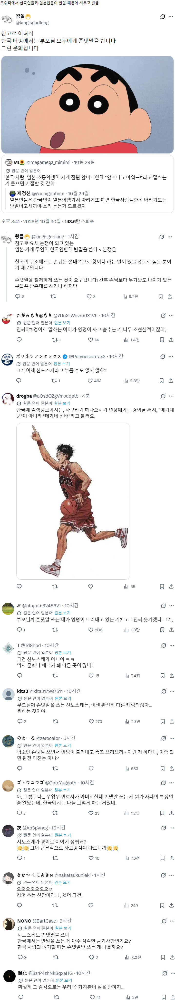
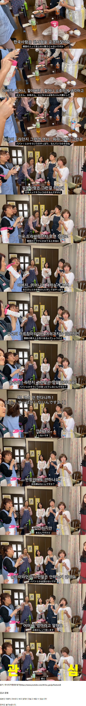

ㅇㅇ 어린애가 그냥 엄마 이름 불러버리더라 ㅋㅋ
미선씨도 아니고 미선아~ 한다고?
저런 미친꼬마를 왜 방영하는거지
맞먹으려 들면 개쳐맞는거임
엄마 아빠 이름부르는건 애교용 아니면 이해 할 수 없다
이거 외의 경우는 상상도 할 수 없다
쳐 맞을려고 ㅋㅋㅋㅋㅋㅋㅋㅋㅋㅋㅋㅋㅋㅋㅋㅋㅋ
어데 가정교육 못 받은 자식이라고 불릴라고.
소중하고 여긴다는 그런 개념이 아니란 말이다...그냥 해선 안되는 것이다ㅋㅋㅋㅋㅋ
부모욕을 해도 그건 용서가 안돼
'평소에 존댓말하다가 엉덩이 내밀고 부리부리하면 미친놈이잖아' 라고 하는데 원래 짱구 미친놈 아니엿나
한국에서 부모한테 늙은이 라고 하는 집안은 어느정도 콩가루인지 감도 안옴
평소에 존댓말이라도 하니까 부리부리는 봐주는 거임
행실 안좋은데 언행까지 나쁘면 우리나라에선 가만 안두지
90년대초에 란마라는 만화를 해적판으로 많이들 봤는데 란마가 아버지랑 할아버지를 시도때도 없이 구타하는거에 진짜 충격받았거든. 아니나다를까 얼마안가 신문에 일본만화 폭력사례로 바로 언급되드라. 일본인들은 효에 대한 관념이 없어
근데 한국 관념으로 봐도 란마 애비는 개막장 아닌가. 좀 패야한다 싶긴 해.
그 정돈 아님 만화니까 과장한 거고
서양에도 효는 있음
ㄹㅇ 데빌구였네
부모님이나 할머니 한테 늙은이 이딴 소리했다간 그날 옷 싹다벗겨서 개쳐맞고 쫒겨나는거지
쿠소 오야지!
어릴 때 만화 보면서 딱 저기 언급되듯이 양아치 고삐리들이 자기 엄마한테도 '시끄러워 할망구!' 이러는 거 보고 ㄹㅇ 문화가 다르구나 싶었지
한국은 아무리 양아치래도 어지간히 가정파탄 상태가 아니고서야...
다른 양아치한테 그러는거 들키면 평판 떨어짐 ㅋㅋ
좋은점도 있지만 나쁜점도 있음
나이가 벼슬인줄아는 몰상식한 틀딱들이 같이 생겨남
부모한테 늙은이라고 한다고???
일본도 우리랑 비슷한줄 알았는데
뭔가 격식이 예라기 보다는 복종에 바탕한 느낌 같기도 하고.
노친네 정도는 애정을 담은 느낌으로 많이 쓰긴 하지
왜 반말 하냐고 살인도 하는 나라에서 반말을 하겠다고??ㅋㅋㅋㅋㅋㅋ
할수는있는데 그냥.. 가정교육 못받은사람 취급당함 그것도 그 한번으로 영원히 가까이두고싶지않은 사회성떨어지는 인간이 되니까 욕보다 심함
"경어로 말하는 아이가 엉덩이 까고 춤추는 거 너무 초현실적이잖아"<<<생각해보니 그러네?
부모한테 반말하면 그날로 빤쓰까지 다 뜯기고 개패듯이 처맞다가 쫒겨나는거지
오우...애가 악의를 가지고 부모 이름을 부른다?
집안 뒤집어지지...
카우보이비밥 일판은 스파이크가 제트(대머리 아재)한테 반말쓰더라 어색어색
존댓말 문화가 극도로 발달한 나라라
어이 봉미선
일본판은 반말 수준이 아니지
엄마라고 안 부르고 미선아라고 부르잖아 미친 콩가루집안마냥